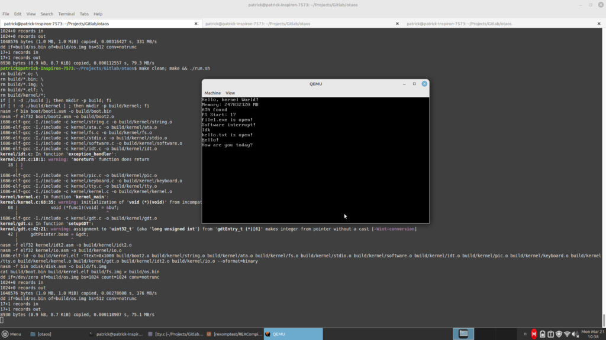

A Week of OS Dev
OS development is sort of a bucket list item among developers. And not without reason- creating an operating system, especially one that runs on reasonably modern hardware, is no small feat. Over spring break and last week, I didn't have a lot on my plate, so I decided to experiment with some OS dev. The final result:

My simple OS loading and running a program from the disk
Yeah, probably not very impressive. In all honesty, if you're a programmer, you might be able to appreciate it, but I'm not offended if you don't.
This little excuse of an OS is called OtaOS, and you find the source here. Now: what was the rational behind this project?
Technical Information
If it were the early 2000s, this project might be more impressive, but in 2022, I doubt it's much.
The OS currently has these features:
- Architecture: i386 (Intel x86 32-bit)
- Custom bootloader (BIOS only)
- Base of a custom file system (which is generous)
- Loads a global descriptor table (GDT)
- Loads an interrupt descriptor table (IDT)
- Keyboard and software interrupts
- ATA PIO driver
- Basic text display
A perfect relic of the 90s, huh? Okay, in all honesty, I wanted to do something that could boot and do basic things on my newer, UEFI based x86-64 Dell computers. While I got a simple kernel to boot that could display things, I made zero progress getting the GDT and the IDT to work. Eventually, I did get the GDT to (appear) to work, but it triple faulted when loading the IDT.
The decision to stick to this old format was mainly because there are more resources for OS development when developing for this architectural format. As great as the OS dev wiki is, there is actually very little on making kernels for newer systems, especially UEFI systems. The same applies with example code- I was only able to find one kernel that could theoretically boot on a UEFI-only based system. On the other hand, there are tons of kernels for older computers out there. Since I was new to OS development, I wanted to stick with something well-documented, so this became the best choice.
Why Make an OS?
You can make a very strong argument that creating an operating system from scratch in 2022 is a waste of time. After all, Windows, Mac OS, Linux, Android, and iOS rule their respective worlds, with some competition from others such as the BSDs. A few research and proof-of-concept ones exist here and there, but there is very little new development on operating systems (meaning, new OSes from the ground-up). The only truly new OS in recent years is Fuschia OS from Google.
So why is more development not done?
Creating an OS is a massive undertaking. Slapping something simple together isn't hard. As pathetic as it is, I put my little OS together in a week. If I stuck to it, I could probably have something usable in a month or two. It would be insecure, buggy, probably would have no hardware support beyond the development computer (aka, my computer), no existing software would work, but the OS itself would probably work.
When you create an operating system, there are a huge number of components that must be taken into account. Booting. Disk drivers. Peripheral drivers. Memory management. Task management. Graphics and display. File management. And within these categories are numerous sub-areas. Computers do not always boot in a consistent way (though this has changed with UEFI), and each architecture has its own specifics. Disks and peripherals all need their own drivers. Memory and task management is complicated to get working efficiently (and let's not even get into SMP). Graphics is a story on its own, even if you don't have a GUI. And then there's file management. Look at the sheer number of different disk formats.
All operating systems are the results of years, often decades of work. And not even decades of work by one person- Linux alone has had thousands and thousands of developers. Some components took the authors years to get working, and even now they are still constantly being improved. And this is just the kernel, not the millions of pieces of software that go on top of it to make something even remotely usable.
So why make an operating system?
The short answer: learning purposes. The time has past that you can create a new OS and have any chance of widespread adoption. But at the same time, as the years go on, fewer people are entering the field with an in-depth knowledge of how operating systems work. This becomes a problem as the older generation who created these operating systems retire and/or pass away. You can make the argument that if care isn't taken to keep knowledge alive, we will end up with a system that no one can make changes to anymore.
A lot is written about not re-inventing the wheel. If you're making a consumer product and trying to meet a deadline, perhaps this is true. But if you consider the bigger picture, it opens a box of problems.
But more on that later.